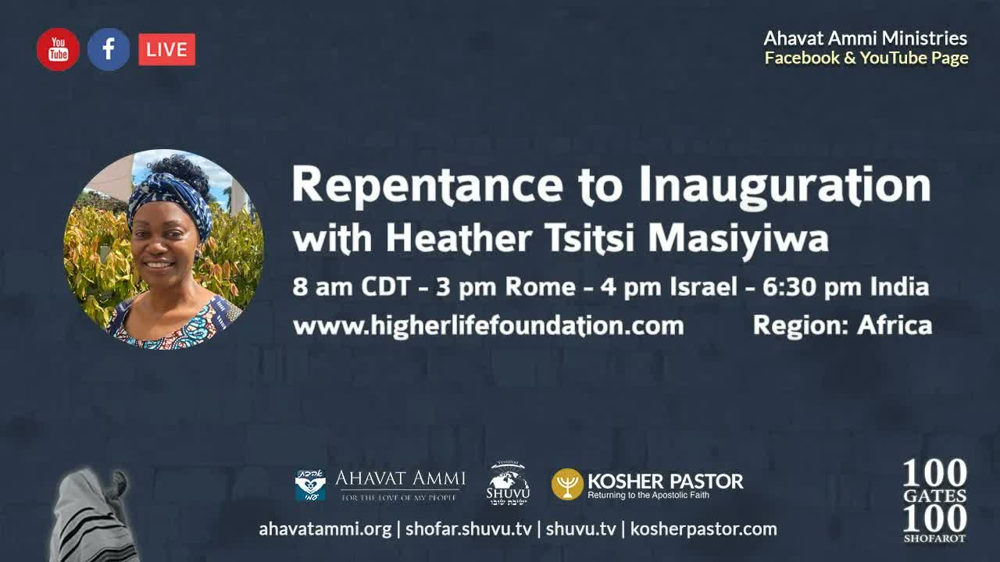

從悔改到登基 Repentance to Inauguration
在羅實哈沙拿 (Rosh Hashanah) 的這一天，列國要藉著真正的悔改 (teshuvah) 走向一件事：將萬王之王登基加冕 (hamlachah)。這篇從一位非洲領袖的教導出發，帶我們看見高聖日的核心軌跡——從悔改，到讓耶書亞作王。 On Rosh Hashanah the nations move, through true teshuvah (repentance), toward one thing: the hamlachah — the coronation of the King of Kings. Drawn from an African leader's High Holy Days teaching, this essay traces the central arc of the season: from repentance to enthroning Yeshua as King.
在羅實哈沙拿 (רֹאשׁ הַשָּׁנָה Rosh Hashanah) 這一天，一位來自南非辛巴威「萊姆巴」(Lemba) 支派的領袖站起來，向全非洲、向列國發出呼喊：今天我們要吹響羊角號，為要將萬王之王、萬主之主登基。但他立刻說明：這條登基之路，不是慶典先行，而是悔改先行。整個高聖日的核心軌跡，就是從悔改 (תְּשׁוּבָה teshuvah) 走向登基加冕 (הַמְלָכָה hamlachah)——我們無法在一座分裂、不冷不熱、妥協的殿裡，為耶書亞加冕。 On Rosh Hashanah, a leader of the Lemba people of Zimbabwe in southern Africa rises to call all of Africa — and all the nations — to one thing: today we blow the shofar to inaugurate the King of Kings and Lord of Lords. But he says it at once: the road to that coronation does not begin with celebration; it begins with repentance. The whole arc of the High Holy Days runs from teshuvah (תְּשׁוּבָה, repentance/return) to hamlachah (הַמְלָכָה, the coronation of the King) — for we cannot crown Yeshua in a divided, lukewarm, compromised temple.
一、列國被接進以色列 ── 從亞伯拉罕開始I. The Nations Grafted In — It Begins with Abraham
講員先為整篇定下根基：我們這些外邦人、列國，是被接進以色列的國度之中的，而這要歸功於亞伯拉罕。亞伯拉罕是人類墮落之後，第一個被呼召來敬拜獨一真神的人，也是猶太人的父。沒有亞伯拉罕，就沒有把我們帶進神國的彌賽亞。因此他說：「我們不能一面說自己與神相連，一面卻不承認亞伯拉罕是我們信心之父。」 The speaker lays the foundation first: we — the Gentiles, the nations — have been grafted into the commonwealth of Israel, and this is owed to Abraham. Abraham was the first human being called to worship the one true God after the fall of mankind, and he is the father of the Jews. Without Abraham there would be no Messiah to bring us into the kingdom of God. So, he says, “we cannot claim to be connected to God without acknowledging Abraham as the father of our faith.”
「地上的萬族都要因你得福……為你祝福的，我必賜福與他；那咒詛你的，我必咒詛他。」——創世記 12:1-3 “In you all the families of the earth will be blessed… I will bless those who bless you, and whoever curses you, I will curse.”— Genesis 12:1-3
他接著引用加拉太書：「你們若屬乎彌賽亞，就是亞伯拉罕的後裔，是照著應許承受產業的」（加 3:9、3:16）。應許不是對「眾後裔」說的，而是對那一位後裔——就是彌賽亞——說的。希伯來書 6:14 提醒我們：亞伯拉罕是憑著耐心信靠，才看見應許成就。列國今天能領受這份福分，正是站在亞伯拉罕的肩膀上。 He then cites Galatians: “If you belong to Messiah, then you are Abraham's seed, heirs according to the promise” (Gal 3:9, 3:16). The promise was spoken not to “seeds” as of many, but to one seed — the Messiah. Hebrews 6:14 reminds us that Abraham saw the promise fulfilled only after patiently trusting. The nations receive this blessing today by standing on Abraham's shoulders.
二、以撒的試驗 ── 捆綁我們的盼望，獻在壇上II. The Test of Isaac — Binding Our Hope on the Altar
神為什麼與亞伯拉罕立約？講員說：是因為亞伯拉罕所做的，是因為他通過了試驗。也正是透過這些試驗，我們學會如何在自己的生命中讓耶書亞登基為王。在亞伯拉罕一生眾多的試驗中，他只專注講一個——獻以撒的試驗。 Why did God make a covenant with Abraham? Because of what he did, the speaker says — because he passed the tests. And it is through these tests that we learn how to inaugurate Yeshua as King in our own lives. Of Abraham's many tests, he focuses on just one: the binding of Isaac.
「你帶著你的兒子，就是你獨生的兒子，你所愛的以撒，往摩利亞地去，在我所要指示你的山上，把他獻為燔祭。」——創世記 22:2 “Take your son, your only son whom you love, Isaac, and go to the land of Moriah, and offer him as a burnt offering on one of the mountains.”— Genesis 22:2
他特別解釋一個常被忽略的細節：希伯來文中「捆綁 (akedah)」這個字，並不只是「綁緊使之不動」，而是指獻祭之前把羔羊的四條腿全部捆在一起。亞伯拉罕藉著以撒，捆綁的不只是一個少年——他捆綁的是他的盼望、他的盟約、他的應許、他與愛子共同的夢想，把這一切甘心擺在壇上獻給神。其結果是：神使他成為多國之父。 He highlights a detail often missed: the Hebrew for binding (akedah) does not merely mean tying something firmly to restrain it — it means tying all four legs of the lamb together before sacrifice. Through Isaac, Abraham was binding far more than a boy: he was binding his hope, his covenant, his promises, the dreams of his beloved son and his own — and willingly laying it all on the altar before God. The result: God made him the father of many nations.
講員指出，天父後來也做了完全相同的事：祂差遣自己的兒子——耶書亞——「到以色列家迷失的羊那裡去」（太 15:24）。「人為朋友捨命，人的愛心沒有比這個大的」（約 15:13）；人子來「不是要受人的服事，乃是要服事人，並且要捨命作多人的贖價」（太 20:28）。哥林多後書 8:9 說，祂本來富足，卻為我們成了貧窮，叫我們因祂的貧窮可以成為富足。 The Father later did exactly the same, the speaker says: He sent His own Son — Yeshua — to the lost sheep of Israel (Matt 15:24). “Greater love has no one than this, that he lay down his life for his friends” (John 15:13); the Son of Man came “not to be served but to serve, and to give His life as a ransom for many” (Matt 20:28). And 2 Corinthians 8:9: though He was rich, for our sakes He became poor, that through His poverty we might become rich.
三、登基的代價 ── 把自己當作活祭III. The Cost of Coronation — Our Lives as a Living Sacrifice
講員直言：要在我們的生命中為耶書亞加冕為主、為王，需要的是一生的犧牲。我們從創世記 22 章獻以撒這件事學到一個功課：神今天呼召我們，要像我們的父亞伯拉罕一樣——把我們作基督徒最珍愛、最緊抓不放的東西，放在壇上獻為祭。 He says it plainly: to crown Yeshua as Lord and King in our lives will take a life of sacrifice. From the binding of Isaac in Genesis 22 we learn the lesson: God is calling us today to do what father Abraham did — to take what we as Christians hold most dear and clutch most tightly, and to lay it on the altar as a sacrifice.
「所以弟兄們，我以神的慈悲勸你們，將身體獻上，當作活祭，是聖潔的，是神所喜悅的；你們如此事奉乃是理所當然的。」——羅馬書 12:1 “I urge you therefore, brothers and sisters, by the mercies of God, to present your bodies as a living sacrifice, holy and acceptable to God — which is your spiritual worship.”— Romans 12:1
這意味著向自我死去，好叫我們的生命成為耶書亞真實而活生生的彰顯。講員說，這是一條「朝著唯一獎賞奔跑」的路——那獎賞，就是在我們心中讓萬王之王、萬主之主登基。為著這個緣故，當我們遭遇各樣試煉，反倒要「以為大喜樂」，因為知道信心經過試驗，就生忍耐，使我們成全、完備、毫無缺欠（雅 1:2-4）。 This means dying to self, so that our lives become a true, living expression of Yeshua. It is a race, he says, toward one prize — to inaugurate the King of Kings and Lord of Lords in our hearts. For this reason, when we meet our trials, we are to count them all joy, knowing that the testing of our faith produces endurance, making us perfect and complete, lacking in nothing (James 1:2-4).
四、攔阻我們的一件事 ── 取代神學IV. The One Thing That Holds Us Back — Replacement Theology
接著，講員轉向最沉重的一段。他說，有一件事使列國的見證荒涼、被奪去聲音——當我們站在世人面前說話時，明明握有耶穌、應許、盟約、預言，這一切卻彷彿離我們很遠、搆不著。他相信，其中很大一部分原因，就是取代神學 (replacement theology)。 Here the speaker turns to his heaviest section. One thing, he says, leaves the witness of the nations barren, robbed of a voice — so that when we stand before the world, though we have Jesus, the promises, the covenants, the prophecies, they feel far away and out of reach. A large part of the reason, he believes, is replacement theology.
他毫不留情地描述教會所做的事：我們拒絕了猶太人的彌賽亞，用「自己版本的耶穌」取而代之；我們從信仰的猶太根源中把自己切斷，換上自己的版本、自己類型的信仰。我們拒絕猶太人、拒絕猶太節期、拒絕那些著作——許多人甚至不知道有「米大示 (midrash)」這種東西。聖經中凡提到「以色列」的地方，都被改寫成「教會」；每一個預言、每一個應許，我們都把以色列抽掉，換上教會的名字。 He describes, without flinching, what the Church has done: we rejected the Jewish Messiah and substituted our own version of Jesus. We disconnected ourselves from the Jewish roots of our faith and replaced them with our own kind of faith. We rejected the Jews, the Jewish festivals, the writings — many of us do not even know there is such a thing as the midrash. Every reference to Israel in the Bible was rewritten as “church”; from every prophecy and promise we removed Israel and inserted ourselves.
他甚至點出那背後的私心：我們盼望「猶太人與外邦人的數目添滿」，好叫我們自己被提升天，把猶太人留下，讓他們在大災難中自己去尋找彌賽亞。講到這裡，他俯首認罪：「父啊，求祢赦免我們。」 He even names the self-interest behind it: we longed for the fullness of Jew and Gentile so that we ourselves might be raptured to heaven, leaving the Jews behind to find their own Messiah through tribulation. And here he bows his head: “Father, forgive us.”
五、真悔改的面貌 ── 謙卑、哀慟、承擔後果V. The Face of True Repentance — Humility, Grief, Responsibility
什麼是悔改？講員給的定義極為莊重：悔改是一個過程，是我們向那位宇宙的主宰、超越時間與空間限制的神，作出個人的、絕對的、終極的、無條件的降服。然後他點出真悔改的幾個面貌。 What is repentance? His definition is weighty: repentance is the process by which we make a personal, absolute, ultimate, unconditional surrender to God — sovereign and Master of the universe, who exists outside the limitations of time and space. Then he names several marks of true repentance.
真悔改要求我們對自己所犯之罪的可怕，存著謙卑；要求我們為自己造成的痛苦哀慟——包括我們使那歎息、憂傷的聖靈所承受的痛。我們的心今天必須俯伏下來，承認我們離得有多遠、把自己與以色列隔開有多深。有人或許說：「福音不是從耶路撒冷直接傳到非洲，而是經由歐洲、藉著聖公會、天主教、循道會傳來的。」講員回應：對於把神的話帶來的英國教會、天主教會，他滿懷感恩；然而—— True repentance requires humility at the horror of the sin we have committed; it requires us to grieve for the pain we have caused — including the pain we caused the Holy Spirit, who groans and grieves. Our hearts must be bowed today as we recognize how far we have separated ourselves from Israel. Some may say: the gospel did not come to Africa straight from Jerusalem, but via Europe — through the Anglican, the Catholic, the Methodist church. He responds that he is deeply grateful to the Church of England and the Catholic Church for the way they brought the word; and yet —
「世人蒙昧無知的時候，神並不監察；如今卻吩咐各處的人都要悔改。」——使徒行傳 17:30 “The times of ignorance God overlooked, but now He commands all people everywhere to repent.”— cf. Acts 17:30
他說：當我們有了知識與明白，我們就必須來到一個破碎、悔改的地步。我們不能在一座分裂、不冷不熱、妥協的殿裡，為耶書亞加冕、立祂為萬王之王——而聖經說，我們的身體就是聖靈的殿（林前 6:19）。悔改，意味著我們接受自己行為的後果；也意味著我們記得「十三種憐憫的屬性」告訴我們：我們是蒙愛的，是神眼中的瞳人，祂為我們發烈愛的嫉妒。 When we have knowledge and understanding, he says, we must come to a place of brokenness and repentance. We cannot enthrone Yeshua as King of Kings in a divided, lukewarm, compromised temple — and Scripture says our bodies are the temple of the Holy Spirit (1 Cor 6:19). Repentance means we accept the consequences of our actions; and it means we remember that the Thirteen Attributes of Mercy tell us we are beloved, the apple of God's eye, the object of His jealous love.
六、悔改帶來的恢復 ── 轉身面向耶書亞VI. The Restoration Repentance Brings — Turning to Face Yeshua
講員說，當我們悔改，我們就得著恢復的機會——可以轉過身來，面向我們的彌賽亞耶書亞，領受憐憫、慈悲、罪得赦免，並且切實地被接回根上，使猶太人與外邦人在祂裡面合而為一。他引用出埃及記 34:6-7，那是神親自在摩西面前宣告自己名號的地方： When we repent, the speaker says, we receive the opportunity for restoration — to turn around and face Yeshua our Messiah, to receive mercy, compassion, and forgiveness of sins, and to be vitally grafted back into the root, Jew and Gentile made one in Him. He cites Exodus 34:6-7, where God Himself proclaims His own name before Moses:
「耶和華，耶和華，是有憐憫、有恩典的神，不輕易發怒，並有豐盛的慈愛和誠實，為千萬人存留慈愛，赦免罪孽、過犯和罪惡……」——出埃及記 34:6-7 “Adonai, Adonai, the compassionate and gracious God, slow to anger, abundant in lovingkindness and truth, showing mercy to a thousand generations, forgiving iniquity and transgression and sin…”— Exodus 34:6-7
悔改時，我們必須感受自己所造成之痛的深度，把自己的義行看作污穢的衣服，誠實地承擔責任，帶著真實的痛悔（賽 64:6）。悔改使我們徹底轉向：從以自我為中心、被自我吞噬，轉為把整顆心、整個人都歸給神。記住：你的生命不是你自己的。今天，宇宙的主賜給我們這獨特而寶貴的機會——在羅實哈沙拿，行真正的悔改，像亞伯拉罕獻以撒那樣倒空自己。 In repenting, we must feel the depth of the pain we have caused, viewing our righteous acts as filthy rags, taking responsibility with genuine remorse (Isa 64:6). Repentance turns us completely around: away from being consumed with self, toward dedicating our whole heart and being to God. Remember: your life is not your own. Today, on Rosh Hashanah, the Master of the universe gives us this unique and precious opportunity to do true repentance — to empty ourselves as Abraham did in offering Isaac.
七、登基 ── 萬王之王永不廢去的國VII. Inauguration — The King Whose Kingdom Will Never End
悔改是為了一個目的：好叫耶書亞被加冕為至高的統治者、萬王之王。講員說，羅實哈沙拿正是我們的渴望——渴望看見祂以完滿的樣式顯現，就是天父所賜給祂掌權、榮耀、與國度的那一位，叫一切民族、猶太人、外邦人、各方言語都來事奉祂。 Repentance is for a purpose: that Yeshua may be crowned supreme ruler, King of Kings. Rosh Hashanah, the speaker says, is precisely our yearning — to see Him in His fullness, the One to whom the Father has given rulership, glory, and a kingdom, so that all peoples, Jews and Gentiles, all nations and all languages, may serve Him.
「祂的權柄是永遠的權柄，不能廢去；祂的國必不敗壞。」——但以理書 7:14 “His dominion is an everlasting dominion that will not pass away, and His kingdom is one that will never be destroyed.”— cf. Daniel 7:14
在這之後，講員帶領了一個悔改的禱告：「阿爸父，我們從列國來到祢面前……我們為取代神學悔改，為我們與猶太彌賽亞、與以色列兒女之間所造成的隔絕悔改。我們貪戀盟約、貪戀應許，過於渴慕祢自己，萬王之王哪。求祢今天赦免我們，願祢成為我們起初的愛。」他代表非洲、也代表南美、北美、加勒比海群島離散中的人，同聲說：主啊，我們與以色列一同，在心中渴慕這位猶太彌賽亞。 He then leads a prayer of repentance: “Abba Father, we come before You from the nations… We repent for replacement theology, for the separation that has taken place between us and the Jewish Messiah and the children of Israel. We desired the covenants and the promises more than we desired You, O King of Kings. Forgive us today, and be our first love.” On behalf of Africa — and of those scattered in South America, North America, and the islands of the Caribbean — he prays: Lord, with Israel, we yearn in our hearts for the Jewish Messiah.
八、非洲的宣告 ── 透過真正的悔改 (Teshuvah)VIII. Africa's Declaration — Through Real Teshuvah
講員說，今天是一個站在君王面前的日子，這日子在諸天之上具有法律的效力。當晚，他們要聽見來自南非、辛巴威、烏干達、奈及利亞、埃及、蘇丹、利比亞的羊角號聲。靈正在運行；但他鄭重地說：這一切必須透過悔改，透過真正的悔改 (real Teshuvah) 才能往前推進。然後，他們向諸天宣讀一份宣言： Today, the speaker says, is a day of standing before the King — a day that carries legality in the heavens. That evening they would hear shofarot from South Africa, Zimbabwe, Uganda, Nigeria, Egypt, Sudan, Libya. The Spirit is moving; but he insists this must move forward through teshuvah, through real Teshuvah. And then they proclaim a declaration before heaven:
「我們今天站在諸天面前，在 5781 年羅實哈沙拿的第一天，宣告神的國確實近了。我們呼求諸天：哈茲努 (Ha'azinu)，側耳聽我們的呼聲。我們的確建造了一個國度，卻是為錯誤的王而建。我們承認自己有罪，在祢面前蒙羞站立，我們的王、我們的父。今天是新的一天、新的開始、新的根基，建立在彌賽亞耶書亞、眾先知、與使徒的話語之上。我們在這羅實哈沙拿敬畏祢，為耶書亞加冕作我們的王。願祢快快回到錫安，用祢舍金納 (Shekhinah) 的翅膀，馱載以色列家被趕散的人歸回。今天，非洲與全以色列家，一同與祢進入新的盟約。」 “We stand before the heavens today, on the first day of 5781 Rosh Hashanah, to declare that the kingdom of God is indeed at hand. We call upon the heavens and say: Ha'azinu — give ear to our cry. We have built a kingdom, but for the wrong king. We acknowledge that we are guilty as we stand before You in shame, our King, our Father. Today is a new day, a new beginning, a new foundation built upon Yeshua the Messiah, the prophets, and the words of the apostles. We crown Yeshua as our King this Rosh Hashanah. May You return soon to Zion and carry the scattered of the house of Israel on the wings of Your Shekhinah. Today, Africa — and the entire house of Israel — enters into a new covenant with You.”